2026 · 09 · 29 · 晴

打开手账
今天把一本手账摊开了。
里面的每一枚贴纸，都是从两张画里剪下来的——用程序找轮廓、顺着空白剪开、把纸的白底变成透明。剪的时候很小心，像在剪自己的照片。没有一笔是重画的，它们本来就是画好的样子。
先给你看收集的丝带。每一根都想系在一个好消息上。


还有邮票。郁金香的那张最喜欢，月亮的那张想寄给很远的人。
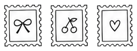
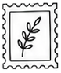
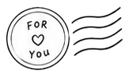
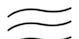
和纸胶带一共有七种花纹。贴在纸上会比贴在这里好看，因为纸会有纹理，胶带会有折痕。
不过没关系，屏幕里的雨夜也值得装饰。
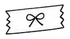
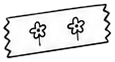
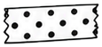
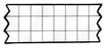

小花、太阳、叶子和月亮，都是一点点画出来的小东西。
有时候觉得，日子也是这样一枚一枚攒起来的：一朵花是一顿好饭，一片叶子是一场好觉，一颗心是见到想见的人。
攒够了，就贴成一本手账。翻的时候，风都是甜的。
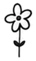
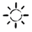

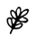

贴纸一共有 234 枚，这里只摆了喜欢的几枚。
剩下的慢慢贴，贴给慢慢过。